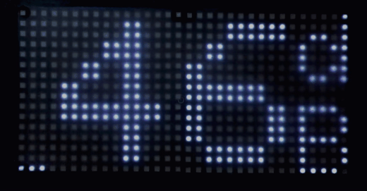
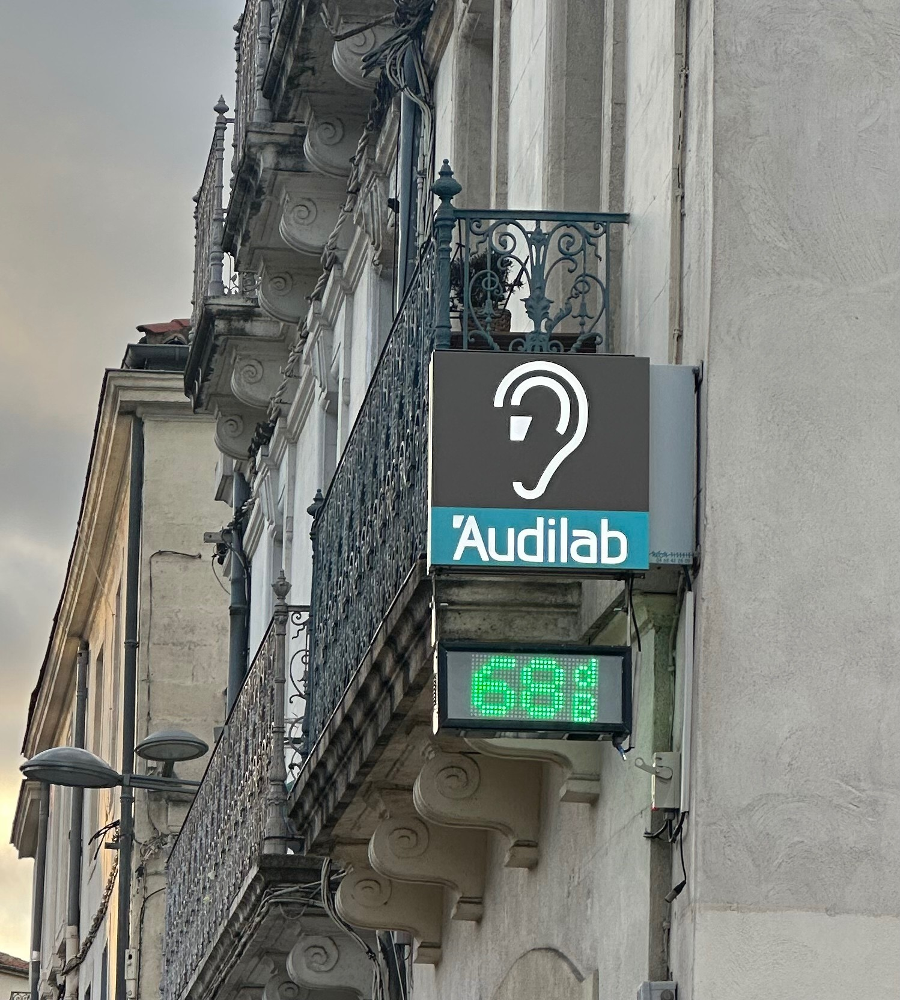
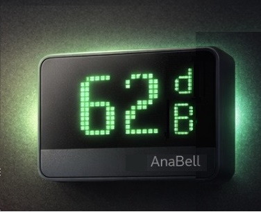

AnaBell est un dispositif d’affichage pédagogique du bruit. Il rend le niveau sonore visible afin de sensibiliser le public aux niveaux de bruit ambiant et encourager un environnement plus calme.

AnaBell est un dispositif clé en main : l’objectif est d’obtenir un résultat clair, simple à utiliser et cohérent avec votre lieu.

AnaBell est installé sur site et configuré selon l’environnement sonore. L’objectif est une utilisation simple et efficace au quotidien.
Les seuils d’affichage peuvent être ajustés afin de correspondre au contexte du lieu (salle d’attente, commerce, espace partagé… intérieur ou extérieur ).
Le dispositif bénéficie d’une garantie de fonctionnement de 24 mois. Il est conçu et assemblé en France avec des composants et matériaux majoritairement français.
AnaBell est un dispositif d’affichage pédagogique du bruit. Il indique une valeur pédagogique destinée à la sensibilisation.
Il ne constitue pas un appareil de mesure réglementaire et ne se substitue pas à un sonomètre normé.
AnaBell® est un dispositif original. Le concept, le nom et certains éléments de conception font l’objet d’une démarche de protection auprès de l’INPI.
Mention d’information – sans caractère contractuel.
